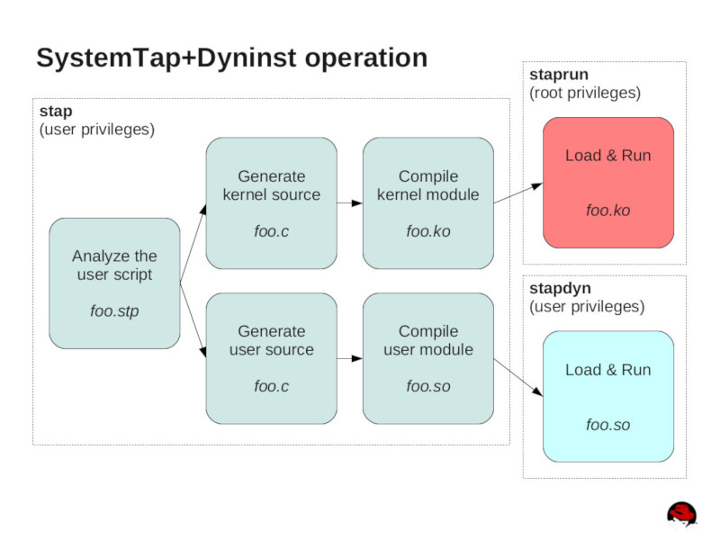

參考資訊：
https://developers.redhat.com/blog/2021/04/16/using-the-systemtap-dyninst-runtime-environment#systemtap_dyninst_runtime_overview
stap命令可以帶入-p1 ~ -p5參數，用來將每個步驟各別輸出(p1:parse, p2:elaborate, p3:translate, p4:compile, p5:run)

$ sudo stap main.stp -p3 > main.c
例如：要將Script輸出成Kernel Module，可以使用如下方式
$ sudo stap main.stp -p4
/root/.systemtap/cache/6d/stap_6db6a30b0a6e8f126f597727b8ceb9a3_983.ko